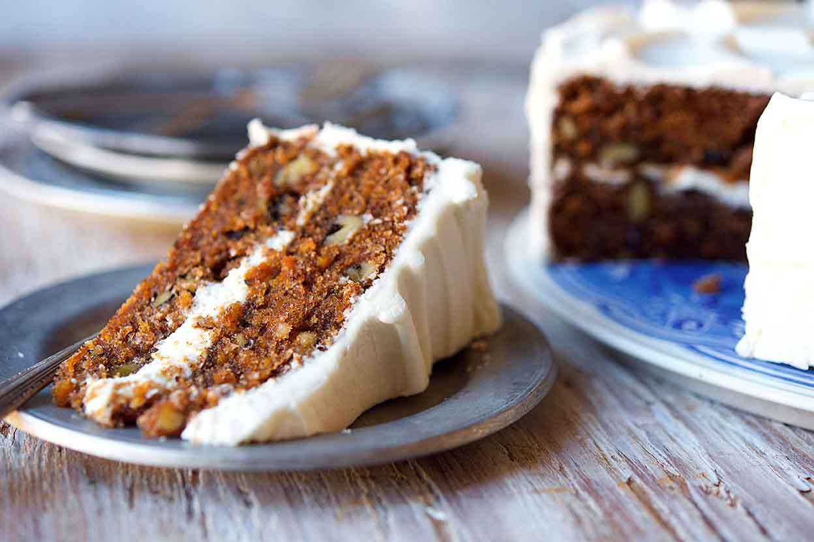

Description
This delicious award winning carrot cake is sure to lure rabbits out of their holes
and guaranteed to please even the most picky in-law during the holidays.
- 1 1/2 cups of granulated sugar
- 1 1/2 cups of oil
- 4 eggs
- 2 cups of flour
- 2 tsp of baking soda
- 2 tsp of baking powder
- 2 tsp of cinnamon
- 1/4 tsp of salt
- 3 cups of grated carrots, packed
- 3/4 cups of walnuts
- Pre-heat the oven to 360 F with a rack in the middle position. Liberally grease a pan
- Beat the sugar and oil together. Beat in eggs one at a time
- In a separate bowl, whisk the flour, baking powder, baking soda, cinnamon, and salt
- Add the flour mixture to the sugar mixture and mix with a wooden spoon
- Fold in the carrots and walnuts
- Pour mixture into greased pan and bake for 45 to 60 min